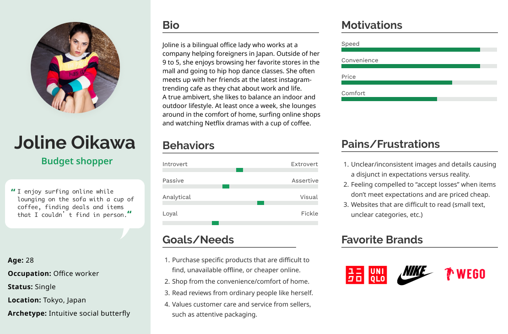

Empathy Map
After hearing what the participants had to say, I transcribed all thoughts and compiled them into an empathy map, organized into thinking/feeling, seeing, hearing, pains, gains and what they do.
By consolidating my research, I was able to identify four key patterns.
1. People are drawn to the idea of good deals and novelty/difficult to find products In other words, they need information on how they can best spend their money (coupons via newsletters, etc), and access to a variety of items that are in demand or rare in-store. There should also be comparing features, search bar, filters, and plenty of customer reviews, giving users control when searching for the best deal or desired product.
2. People like convenience; the idea of a quick, low-effort activity The online shopping experience should be be seamless- IA that users can make sense of, transactions that can be conducted in a low total number of clicks, have a variety of payment options, and guest checkout to make for a faster process
3. People enjoy the human aspect of online shopping. Attentive customer care such as neat packaging, personalized notes/gifts, were all joys expressed by interviewees. They claimed that it conveyed that the business “cared and respected their customers”. The idea of supporting small businesses run by individual people was also a delight expressed by interviewees, as well as customer reviews written by ordinary humans.
4. Expectations not matching Reality A major pain for online shoppers are inconsistent images which waste their time, efforts, and prevent them from shopping somewhere. If the product is cheap, they may be disillusioned into accepting their loss and engaging in feelings of disappointment.
User Persona
Based on the research and findings I had discovered, I then created a persona to represent MIRROR’s target audience and help guide my design.

Project Goals, Features Map and Site Map
Next, I started to work on the information architecture of the project. I brainstormed project goals and compiled a road features map to further help me define necessary content. I also made a site map with the goal was to understand how pages were related to each other, and to organize content in a way that would make sense to users.
Card Sort
In order to tap into how users organize items, I conducted an open card sort. Users organized clothing items into categories created by themselves.
|